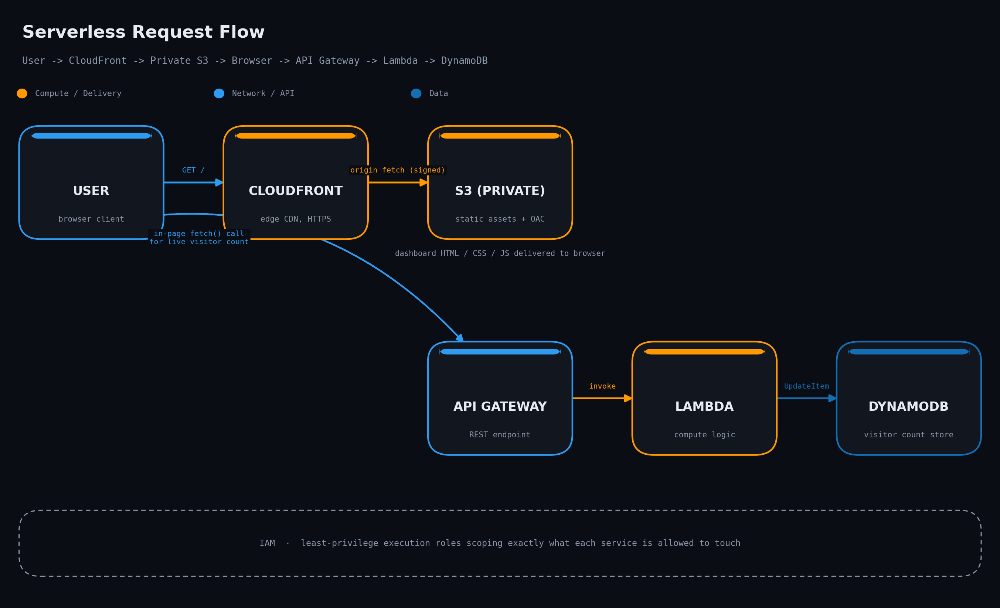

Amazon S3
Private static host
Stores the dashboard's HTML, CSS and JS as a private bucket — no public bucket policy, no direct internet access. Content only leaves the bucket through CloudFront.
us-east-1 · all systems provisioned
A live, working demonstration of a fully serverless architecture hosted entirely on AWS — private static hosting behind CloudFront, and a REST API on API Gateway and Lambda writing real visit counts to DynamoDB. No servers to patch. No idle compute to pay for.
The stack
Every moving part in this project is a fully managed AWS service. Here's what each one is responsible for.
Private static host
Stores the dashboard's HTML, CSS and JS as a private bucket — no public bucket policy, no direct internet access. Content only leaves the bucket through CloudFront.
Global edge delivery
Sits in front of S3 as the only public entry point, caching assets at edge locations worldwide and enforcing HTTPS via Origin Access Control on every request.
Managed REST endpoint
Exposes the /visit route the browser calls to read and increment the counter, handling throttling, CORS and request validation before anything reaches compute.
Event-driven compute
Runs the function that handles each API Gateway request, reads and writes the count in DynamoDB, and returns a JSON response — with zero servers idling between visits.
Serverless NoSQL store
Holds a single item tracking total visits, updated atomically on every request. Scales automatically with traffic and needs no capacity planning at this size.
Least-privilege access
Every service gets a narrowly scoped role: Lambda can only touch the one DynamoDB table it needs, and CloudFront is the only principal allowed to read from S3.
How it fits together
One diagram, two paths: static assets flow through CloudFront and S3, while live data flows through API Gateway, Lambda and DynamoDB.

The browser sends an HTTPS request to the CloudFront distribution's domain — never directly to S3.
Origin Access Control lets CloudFront read the bucket while every other path to it stays blocked.
HTML, CSS and this JavaScript file load and run locally, then the page calls the live API.
The /visit route validates the request and forwards it to a Lambda function.
A short-lived function increments the count and reads back the current total.
The updated total is written to a single table item and returned to the browser as JSON.
Why serverless
No EC2 instances, no OS patching, nothing running when nobody's visiting.
The bucket has no public access at all — only CloudFront can read from it.
Assets are cached at edge locations, so load times stay low anywhere in the world.
Every request, static or API, is encrypted end to end by default.
Lambda and DynamoDB scale from zero to spikes automatically, no capacity planning.
You pay per request, not per hour — idle traffic costs effectively nothing.
Comfortably runs a small project like this within the Free Tier's monthly limits.
Traced live
Watch a single request travel the full path in real time.